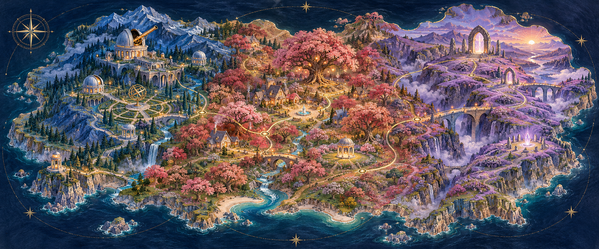

Aaron Alderman / A personal expedition
Inside the mindof a modern-daysourcerer.
Physics, faith, machines, and the work of remembering care.
Follow an idea ↓Sourcerer / a little wordplay, a lot of curiosity.
Three ways into the same world
Begin with a question.
Inside the corpus
Follow a thread.
Questions connect across the worlds. Follow an idea through the research, sources and unfinished work behind it.
Explore the reading paths ↗An imagined landscape of inquiry. The evidence lives in the source notes.

The atlas / Forty places to explore
The world keeps opening.
Leave the front door behind. Follow a question through the unseen, the human and the boundary—three territories with many possible paths.
Explore the atlas ↗